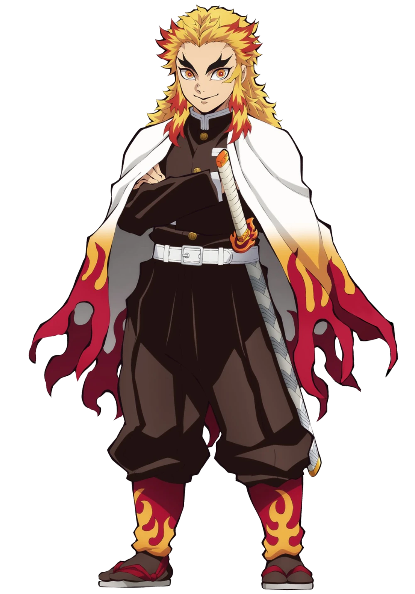
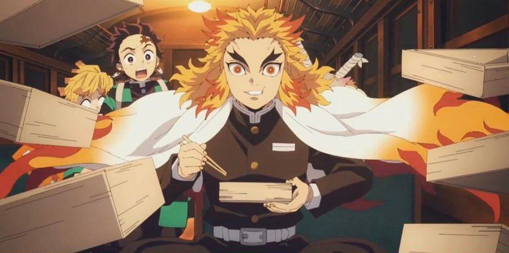
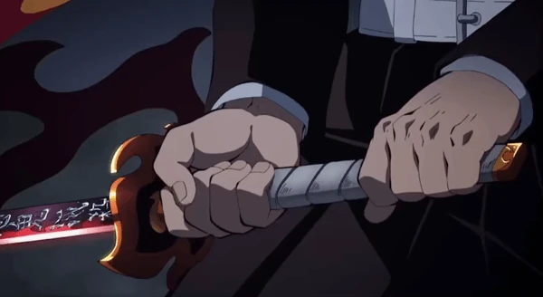
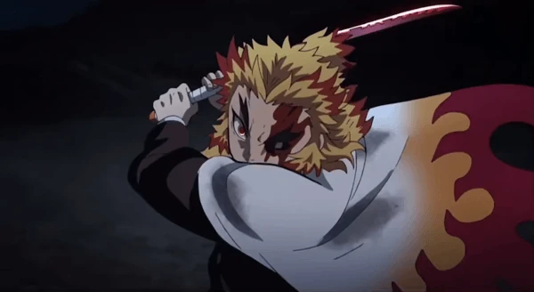

Who is Kyojuro Rengoku?

Rengoku is the Flame Hashira/Pillar from the popular anime/manga Demon Slayer: Kimetsu no Yaiba. We are first introduced to Kyojuro Rengoku as the Flame Hashira at a trial for the protaganist with all of the other Hashira, but we aren't fully introduced to him until the next arc in the series, the Mugen Train arc.

It is a truly iconic scene for the series as well as Rengoku's character. When Tanjiro, the protaganist, and his crew enter the Mugen Train, their ears are soon flooded by a man shouting the Japanese word "umai". which roughly translates to "tasty". They soon find Rengoku eating bento boxes, with stacks of them already empty and eaten, continually exclaiming "tasty" in praise of the food. Not only is this a trait of his very upstanding and thankful character, but in a manga spinoff we learn that Rengoku damaged his hearing in a fight with a demon, which could explain him speaking a bit louder than everyone else. Tanjiro then introduces himself and inquires about a new breathing technique he found himself using when he was in trouble, to which Rengoku commends him but denies knowing anything about the subject. Rengoku then asks about the color of his sword, and laughs at the answer, but then senses multiple demons.


Rengoku then proceeds to swiftly defeat two demons, shown above, which leaves Tanjiro and his companions amazed, leaving them all asking to be Rengoku's apprentices. The train arc then progresses to the point of what seems the end, when suddenly, the Upper Rank number Three of the demons, Akaza, appears. Rengoku and Akaza begin a fierce battle, and throughout it we are shown more of Rengoku's character.


Akaza pokes and prods Rengoku during their battle, asking him to become a demon, saying the weak must be killed, and continually taunting Rengoku. Rengoku refuses to become a human, stating the nature of humans growing old and dying is what gives life its beauty. He rebukes Akaza's hatred of the weak, saying that it is the duty of the strong to protect the weak, so that the weak become the strong who protect the weak.

At a certain point turning point in the battle, Rengoku says what is widely considered on of the most iconic phrases in the series, "心を燃やせ" which spelled out says "Kokorowo moyase!" which translated roughly means "Set your heart ablaze!" or to put passion and purpose in every action. This phrase continues to be a motivator for Tanjiro throughout the series.

However, as strong as Rengoku was, he reaches a stalemate with Akaza, with Akaza's fist piercing Rengoku's abdomen all the way through, a fatal blow. Even so, as the sun begins to rise and Akaza tries to flee, Rengoku amazingly using his remaining strength to firmly hold Akaza's arm in place and swings one final slash at Akazas neck. This causes Akaza to panic, as the sun will instantly kill him, leading him to rip off his own arm, which of course regrows almost instantly. Tanjiro then shouts at the fleeing Akaza, cursing him for his cowardliness and throwing his sword at Akaza, piercing his shoulder. In Rengoku's final moments he speaks to Tanjiro, repeating the phrase "Set your heart ablaze!", and tragically passes away.